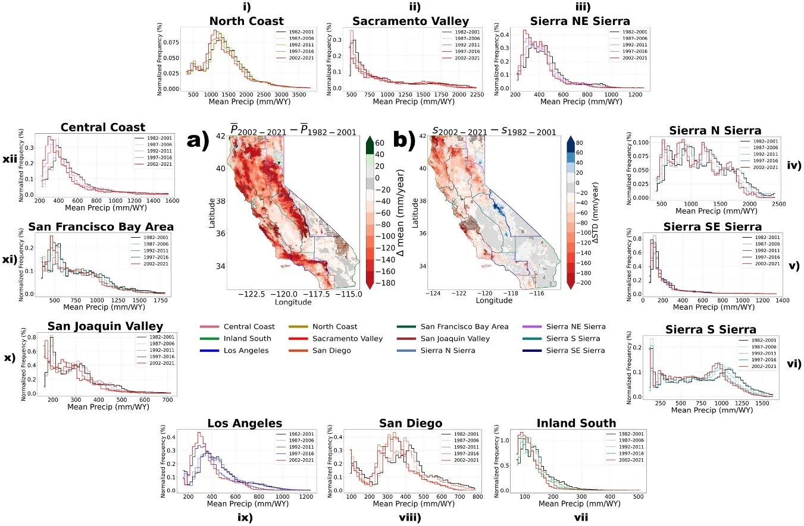
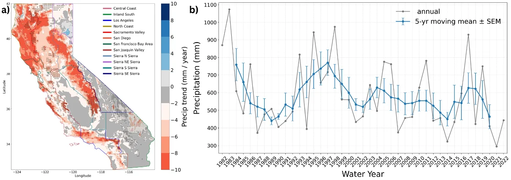
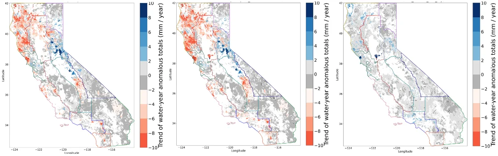
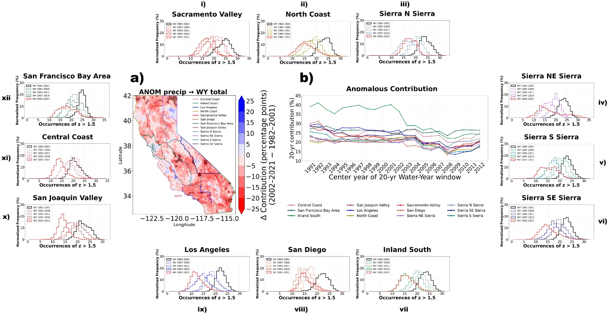
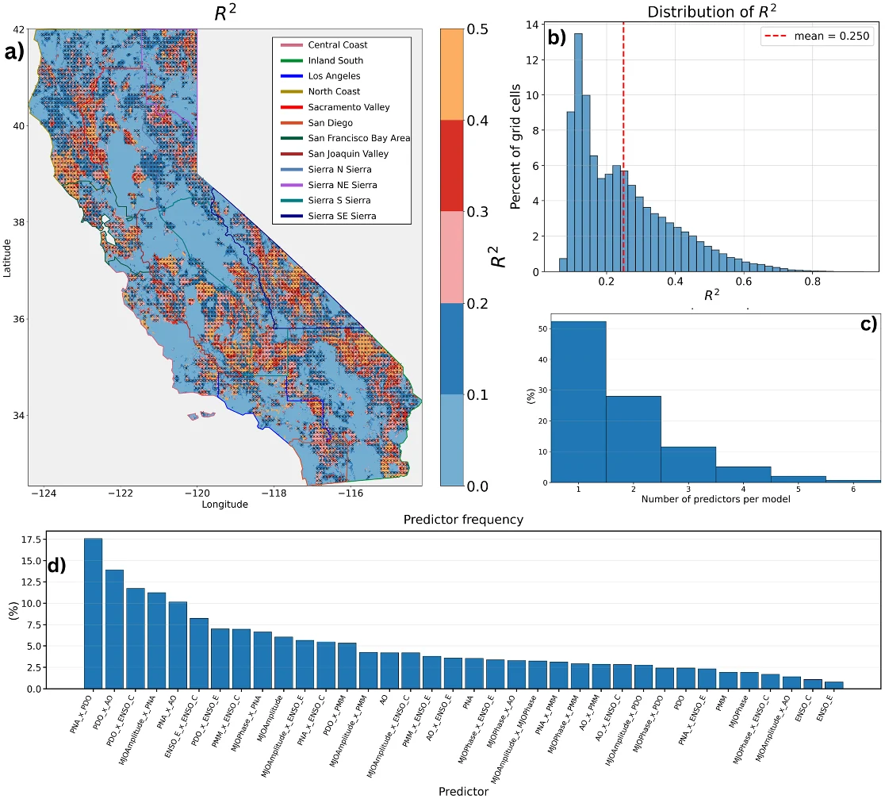

Study 1 of 4 · Diagnose
Recent shift in California's precipitation distribution based on observations
Environmental Research Communications 8, 041013 (2026) · Open access · doi.org/10.1088/2515-7620/ae5eda
Four decades of daily PRISM observations at 800 m show that California has become drier since the late 1990s, with fewer extreme-wet months and smaller swings from year to year. Large-scale climate modes reproduce where the drying happens, but explain only about a quarter of the year-to-year variation in wet months.
>30%
Share of California where mean water-year precipitation fell by more than 100 mm per year, 2002–2021 vs 1982–2001. Losses exceed 400 mm per year in parts of the northern Sierra Nevada.
24% → 17%
Contribution of extreme-wet months (z > 1.5, roughly the top 8%) to annual precipitation, 1982–2001 vs 2002–2021.
17%
Area with a statistically significant drying trend over 1982–2022. Large year-to-year swings and storms such as water year 2017 hide the underlying decline.
~25%
Variance in wet anomalies explained by climate modes and their pairwise interactions, statewide. The Sierra Nevada is lowest (R² ≈ 0.19).
Why it matters
What water managers can take from it
- Baseline
Shorten the reference period
A recent ~20-year climatology fits today's hydroclimate better than a 30-year one. That choice can move drought triggers, reservoir rule curves and allocations.
- Predictors
Trust the trend, not the swings
Use climate modes for the spatial pattern and direction of drying, not for the size or timing of wet years.
- Supply
Plan for fewer big storms
Less of the supply now arrives in the extreme-wet months that atmospheric rivers and snowpack deliver. Carryover storage and recharge readiness become more valuable.
- Outlooks
Re-verify seasonal outlooks on recent years
Both the baseline and the relationships between predictors and precipitation are moving, so skill measured on older periods may not hold.
What we did
Data and methods
We used daily PRISM precipitation for water years 1982–2022 on its native 800 m grid (1138 × 1235 cells), checked against 65 CIMIS stations (mean R² = 0.8) and the NOAA CPC gauge analysis (R² = 0.9). Results are reported by grid cell and for the nine regions of California's Fourth Climate Change Assessment, with the Sierra Nevada split into four subregions.
Changes in mean and variance were tested with t-tests and F-tests in 20-year moving windows stepped by 5 years. Extreme months were defined from monthly z-scores against 1981–2000: z > 1.5 for wet and z < −1 for dry, each about 8% of months.
To test climate modes, each grid cell's wet anomalies were regressed on eight indices (East- and Central-Pacific ENSO, PDO, PNA, AO, PMM, MJO amplitude and phase) and their 28 pairwise interactions. Forward selection kept a predictor only if it was significant and also lowered AICc, raised adjusted R², and improved leave-one-out cross-validated R².
Figures
Key results

Figure 1" loading="lazy">
Figure 3" loading="lazy">
Figure 6" loading="lazy">
Figure 4" loading="lazy">
Figure 5" loading="lazy">Limits of the analysis
What this study does not settle
- The trends are weak and significant over a small part of the state. A shorter window can show strong drying (1997–2016) or almost none (2002–2021, which includes water year 2017).
- The recent decline in variability runs against the longer-term rise in wet and dry extremes since the 1960s and against model projections of more variability. Whether it is temporary is open.
- The regression explains the wet tail only. Separating natural variability from human influence needs a longer record or a dedicated attribution study.
Where this leads
From diagnosis to prediction
If the climate modes behind seasonal outlooks explain only a quarter of the wet-month variance, the practical question becomes which sources of skill do work at the 2–6 week range that reservoir and allocation decisions need. The Madden–Julian Oscillation is the leading candidate, and it is the subject of Study 2.
Cite
Shalgumbayeva, G., A, G. & Velicogna, I. (2026). Recent shift in California's precipitation distribution based on observations. Environmental Research Communications, 8, 041013. https://doi.org/10.1088/2515-7620/ae5eda